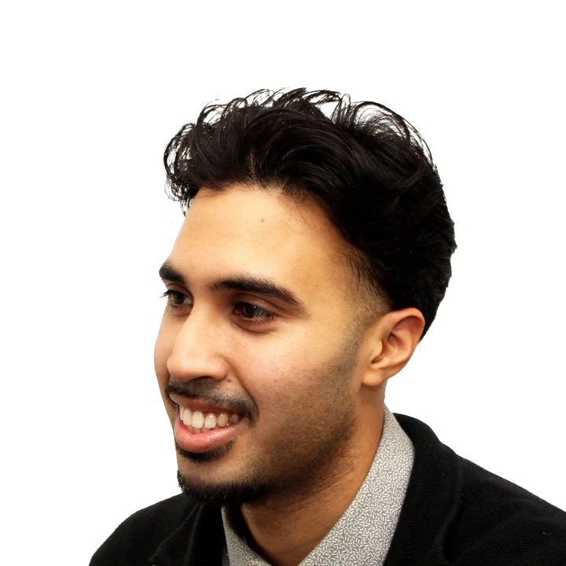

Ziyad Fatmi
Computing Graduate · Cybersecurity
London, United Kingdom
LinkedIn
linkedin.com/in/ziyad-fatmi
›
GitHub
github.com/ZiyadFatmi
›
Email
ziyadali755@gmail.com
›
Call
+44 7958 927059
›
Save Contact